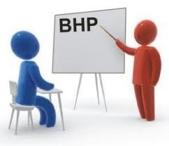

Wprowadzenie
Szkoła jest miejscem, które bez wątpienia jest niejednoznaczne w kontekście opinii. Dla jednych jest to świetne miejsce na edukację, dla innych świetne na nawiązywanie nowych relacji międzyludzkich, a dla jeszcze innych źródło cierpienia i chronicznego stresu. Jednak bez względu na typ osoby, każdy ma obowiązek przestrzegać zasad BHP w celu zapewnienia i utrzymania poczucia bezpieczeństwa i warunków do prawidłowego funkcjonowania.
1.Czym jest BHP?
BHP(Bezpieczeństwo i Higiena Pracy) - to zbiór zasad określających sposób wykonywania pracy, w tym sposób zapewnienia pracownikom odpowiednich warunków do pracy, aby jej wykonywanie było bezpieczne i higieniczne
2.Obowiązki Ustawodawcy
Ustawodawca jest zobowiązany do nakładania na pracodawcę odpowiedzialności za stan bezpieczeństwa i higieny pracy w zakładzie pracy, przy czym obowiązki pracowników w dziedzinie bezpieczeństwa i powierzenie wykonywania zadań służby bezpieczeństwa i higieny pracy specjalistom spoza zakładu pracy nie mają znaczenia w kontekście przyjęć tej odpowiedzialności.
3. Zasady BHP w szkole
Rozporządzenie w sprawie BHP określa zasady funkcjonowania pomieszczeń(sal lekcyjnych, pracowni, labolatoriów, warsztatów, stanowisk nauki praktycznej itp.) szkolnych,które przedstawiają dokładne wytyczne odnośnie zasad i konieczności ich stosowania. Zasady BHP obejmują też ćwiczenia fizyczne, zawody sportowe, wycieczki szkolne oraz konieczność zastosowania określonych procedur podczas wystąpienia zagrożenia zdrowia lub życia. Zasady te regulują sposób funkcjonowania w placówce i umożliwia zapewnienie bezpieczeństwa osobom przebywającym w ośrodku.

4. Obowiązki dyrektora szkoły w zakresie BHP
Dyrektor szkoły to osoba, która nadzoruje daną placówką i osobami w niej pracującymi. Pełni dużą rolę w utrzymywaniu porządku w szkole. Do jego najważniejszych obowiązków należy m.in. ochrona życia i zdrowia uczniów i innych pracowników szkoły. Dyrektor jest również zobowiązany do zapewniania bezpiecznych i higienicznych warunków dla uczniów i pracowników szkoły, podczas ich obecności na terenie placówki. Wymienione zasady są zgodnie z zasadami BHP sprawdzane przez organy prowadzące przynajmniej raz w roku.
5. Obowiązki uczniów szkoły w zakresie BHP
Każdy uczeń szkoły bez względu na wiek, płeć, zdolności akademickie itp. ma obowiązek przestrzegać zasad BHP, zaś nie przestrzeganie ich wiąże się z obniżeniem stopnia z zachowania lub w bardziej skrajnych przypadkach, wezwaniem rodziców lub organów państwowych(np. policji).
6. Bezpieczeństwo w sali lekcyjnej
7. Bezpieczeństwo na korytarzach

8. Bezpieczeństwo w pracowniach specjalistycznych
W pracowniach chemicznych należy zachować szczególną ostroźność, ze względu na występowanie substancji żrących(np. kwas siarkowy VI), które w kontakcie ze skórą mogą prowadzić do poważnych poparzeń, a w przypadku kontaktu z oczami do utraty wzroku.
9. Bezpieczeństwo na zajęciach wychowania fizycznego
10. Higiena osobista i środowiska
Zarówno uczniowie jak i pracownicy placówki, powinni również przestrzegać zasad higieny osobistej, szczególnie podczas wybuchu pandemii COVID-19. Do tych zasad należy m.in.
11. Zasady ewakuacji i postępowanie w sytuacjach kryzysowych
Szkoła powinna oprócz wiedzy przedmiotowej, powinna wyposażać uczniów w wiedzę w zakresie ewakuacji i postępowania w kryzysowych sytuacjach. Należy do nich:
12. Zachowanie i szacunek dla innych osób
Nie można również zapomnieć o obowiązku każdego ucznia do zachowania szacunku wobec innych uczniów i pracowników szkoły bez względu na opinię o danej osobie, zachowywaniu się odpowiedzialnie w miejscu publicznym oraz uczesniczeniu w szkoleniach dotyczących przestrzegania zasad BHP, w tym zasad udzielania pierwszej pomocy.